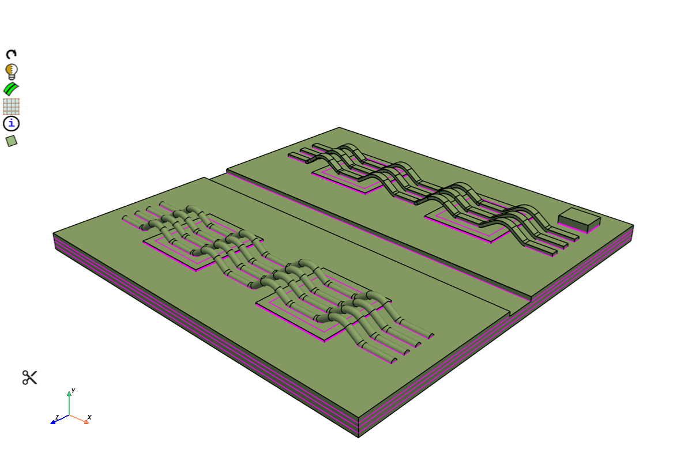
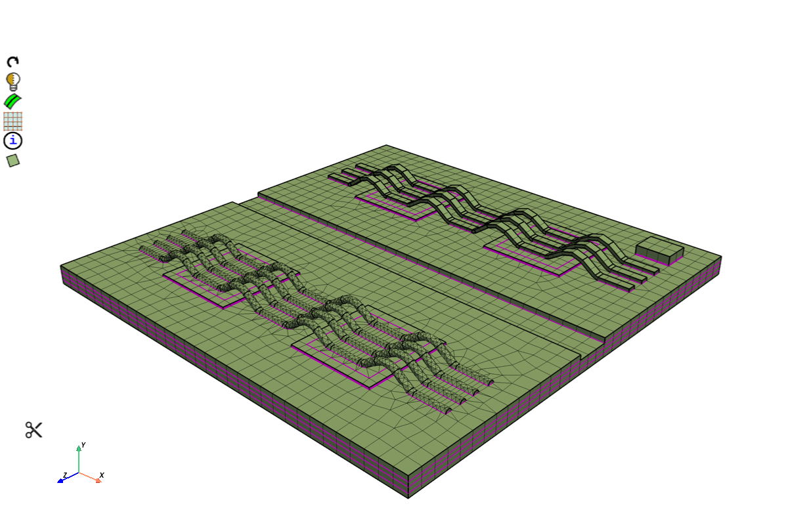
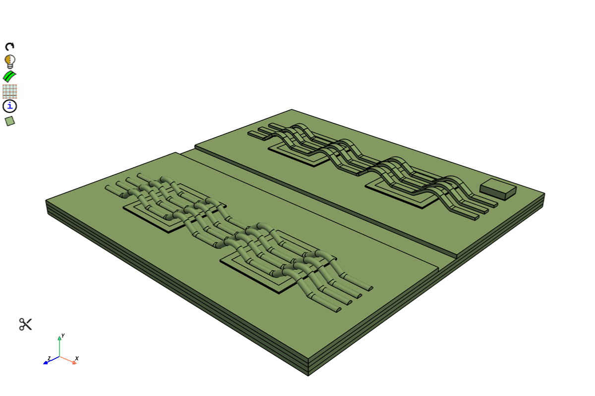
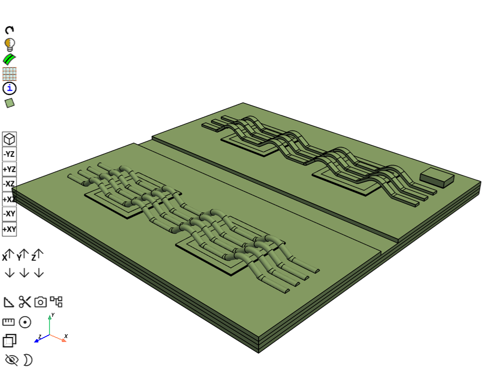
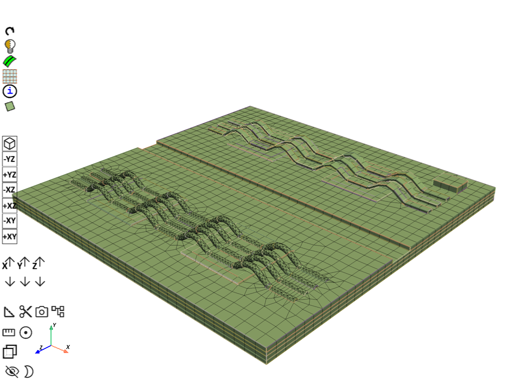

Note
Go to the end to download the full example code.
Mesh ribbon and wire bonds on a direct copper bond module (beta)#
Summary: This example meshes a direct copper bond module twice, once from shared topology and once from separate bodies. Both runs use the same mesh: the ribbons are thin-swept hexahedra, the wires are tetrahedra, and the substrate stack is hexahedra plus the wedges swept from the wire feet. The two runs differ in how the contacting faces are made conformal.
Note
This example uses beta APIs. The behavior and names may change in the future. MultiZone controls are a beta feature. The beta parameters used here are:
SweepType.THINSWEEPMultiZoneSweepMeshParams.sweep_type,thin_sweep, andn_divisionsMultiZoneSizingParams.min_sizeandmax_sizeDeleteMeshParams.delete_mesh_on_connected_topo_edgesMeshStackerParams.seed_faces, used only for the separate bodiesLabelExportParams.label_expression_for_nodal_components
Objective#
The module is a 25 mm substrate with copper, ceramic, die-attach, devices, three ribbon bonds, and four wire bonds. The ribbons are too arched for the stacker, so multi-zone thin-sweeps them. The wires are filled with tetrahedra from a 0.25 mm quad surface. That fill triangulates the wire boundary, so the wire mesh has no pyramids: a tetrahedron meets a triangle directly. The stacker then sweeps those triangles on the wire feet through the substrate, which is where the wedges come from. The rest of the stack is 0.8 mm quads, one cell through each substrate layer, and the ribbons have three cells through their thickness.
The CAD is prepared in two ways. The mesh recipe above is the same for both. Only the connectivity changes:
Shared topology, stored as a PMDAT. The wire feet and the copper are the same faces, so the tetrahedra and the swept wedges already share them. No node merge is required.
Separate bodies, stored as an FMD. The flat faces on each wire foot are seeded onto the stacker base, the parts are meshed, and boundary nodes within 0.01 mm are fused.
The shared-topology PMDAT starts as a Discovery document (.dsco) in which
the solids already share faces. Prime reads it with the Workbench CAD reader,
which is the route that keeps shared topology, and writes the session to
PMDAT. One part is created for the whole model, in millimeters, and the shared
faces are validated on the way in. The example then reads that PMDAT.
params = prime.ImportCadParams(
model=model,
cad_reader_route=prime.CadReaderRoute.WORKBENCH,
part_creation_type=prime.PartCreationType.MODEL,
length_unit=prime.LengthUnit.MM,
validate_shared_topology=True,
)
prime.FileIO(model).import_cad("dcb_bonding.dsco", params=params)
prime.FileIO(model).write_pmdat(
"dcb_bonding_shared_topology.pmdat", prime.FileWriteParams(model)
)




Procedure#
Launch Ansys Prime Server.
Read the shared-topology module and mesh it.
Import the same module as separate bodies and mesh it with the foot faces seeded onto the stack.
Merge boundary nodes on the separate-body mesh.
Write each mesh to a MAPDL CDB file.
# sphinx_gallery_tags = ["Structural", "Semiconductor", "Hex", "Tet", "Quad", "MultiZone", "Stacker", "Beta"] # noqa: E501
# sphinx_gallery_thumbnail_number = 2
Launch Ansys Prime Server#
Import the modules used by both preparations. The geometry files are downloaded from the PyPrimeMesh example data.
import os
import tempfile
import ansys.meshing.prime as prime
from ansys.meshing.prime.graphics import PrimePlotter
QUAD_SIZE = 0.8
WIRE_SIZE = 0.25
def show_model(model, update=False):
"""Show the module from above so the bonds are visible.
The board lies in the XZ plane and is only a few millimeters thick, so the
camera looks down the thickness direction with a small tilt.
"""
display = PrimePlotter()
display.plot(model, update=update)
display.scene.camera_position = [(32.0, 28.0, 34.0), (0.0, 4.0, 0.0), (0.0, 1.0, 0.0)]
display.show()
def mesh_counts(model, part):
"""Print cell and node counts."""
summary = part.get_summary(prime.PartSummaryParams(model=model, print_mesh=True))
print(
f"\n{summary.n_nodes} nodes, {summary.n_hex_cells} hex, "
f"{summary.n_prism_cells} prism, {summary.n_pyra_cells} pyramid, "
f"{summary.n_tet_cells} tet ({summary.n_cells} cells)"
)
return summary
def export_mapdl_cdb(model, file_name):
"""Write a MAPDL CDB file and export labels as nodal components.
``label_expression_for_nodal_components`` is a beta parameter.
"""
# Beta: LabelExportParams.label_expression_for_nodal_components.
# The behavior and name may change in the future.
params = prime.ExportMapdlCdbParams(model=model)
params.label_export_params = prime.LabelExportParams(
model=model,
label_expression_for_nodal_components="*",
)
with tempfile.TemporaryDirectory() as temp_folder:
mesh_file = os.path.join(temp_folder, file_name)
prime.FileIO(model=model).export_mapdl_cdb(file_name=mesh_file, params=params)
assert os.path.exists(mesh_file)
print("\nExported file:\n", mesh_file)
def _python_ids(values):
return [int(value) for value in values]
def _label_wire_feet(model):
"""Mark each wire volume, and the flat faces that sit on the copper."""
utilities = prime.SurfaceUtilities(model)
for part in list(model.parts):
labels = list(part.get_labels())
if not (part.name.startswith("solid") and not any("ribbon" in label for label in labels)):
continue
part.add_labels_on_topo_entities(["wire_solid"], _python_ids(part.get_topo_volumes()))
faces = _python_ids(part.get_topo_faces())
boxes = []
for face in faces:
zonelets = _python_ids(model.topo_data.get_geom_zonelets_of_topo_faces([face]))
if not zonelets:
continue
box = utilities.get_bounding_box_of_zonelets(zonelets)
boxes.append((face, box.ymin, box.ymax))
if not boxes:
continue
foot = min(ymin for _, ymin, _ in boxes)
# The sides of the wire make the stacker reject the seed. Keep the flat foot.
contact = [
face for face, ymin, ymax in boxes if ymin <= foot + 0.02 and ymax <= foot + 0.05
]
if contact:
part.add_labels_on_topo_entities(["wire_contact"], contact)
def mesh_bonded_module(model, part, use_contact_seeds=False):
"""Tet-fill the wires, thin-sweep the ribbons, and stack the substrate.
Parameters
----------
model : prime.Model
Active model.
part : prime.Part
Part that contains the wires, the ribbons, and the substrate.
use_contact_seeds : bool, optional
Imprint the ``wire_contact`` faces onto the stacker base. Separate
bodies need this. Shared topology already has those faces in common.
Returns
-------
prime.Part
The meshed part, still carrying topology.
"""
name_params = prime.NamePatternParams(model)
ribbons = _python_ids(part.get_topo_volumes_of_label_name_pattern("*ribbon*", name_params))
wires = _python_ids(part.get_topo_volumes_of_label_name_pattern("wire_solid", name_params))
if not wires:
wires = _python_ids(part.get_topo_volumes_of_zone_name_pattern("*wire*", name_params))
part.add_labels_on_topo_entities(["wire_solid"], wires)
stack_volumes = [
volume
for volume in _python_ids(part.get_topo_volumes())
if volume not in set(ribbons + wires)
]
part.add_labels_on_topo_entities(["stack_solid"], stack_volumes)
wire_faces = _python_ids(part.get_topo_faces_of_topo_volumes(wires))
part.add_labels_on_topo_entities(["wire_faces"], wire_faces)
print(f"\nRibbons={len(ribbons)} wires={len(wires)}")
model.set_global_sizing_params(prime.GlobalSizingParams(model=model, min=2.0, max=2.0))
prime.lucid.Mesh(model).surface_mesh(
min_size=WIRE_SIZE,
scope=prime.lucid.SurfaceScope(
entity_expression="wire_faces",
part_expression=part.name,
scope_evaluation_type=prime.ScopeEvaluationType.LABELS,
),
generate_quads=True,
)
multi_zone = model.control_data.create_multi_zone_control()
volume_scope = prime.ScopeDefinition(
model=model,
entity_type=prime.ScopeEntity.VOLUME,
evaluation_type=prime.ScopeEvaluationType.LABELS,
label_expression="*ribbon*",
)
surface_scope = prime.ScopeDefinition(
model=model,
entity_type=prime.ScopeEntity.FACEZONELETS,
evaluation_type=prime.ScopeEvaluationType.LABELS,
label_expression="*ribbon*",
)
multi_zone.set_volume_scope(volume_scope)
multi_zone.set_surface_scope(surface_scope)
# Beta: MultiZoneSizingParams.min_size and max_size.
# The behavior and names may change in the future.
multi_zone.set_multi_zone_sizing_params(
prime.MultiZoneSizingParams(model=model, min_size=QUAD_SIZE, max_size=QUAD_SIZE)
)
# Beta: SweepType.THINSWEEP and MultiZoneSweepMeshParams.sweep_type,
# thin_sweep, and n_divisions.
# The behavior and names may change in the future.
multi_zone.set_sweep_mesh_params(
prime.MultiZoneSweepMeshParams(
model=model,
sweep_type=prime.SweepType.THINSWEEP,
thin_sweep=True,
n_divisions=3,
)
)
dead = model.control_data.create_volume_control()
dead.set_params(prime.VolumeControlParams(model, cell_zonelet_type=prime.CellZoneletType.DEAD))
dead.set_scope(
prime.ScopeDefinition(
model,
evaluation_type=prime.ScopeEvaluationType.LABELS,
entity_type=prime.ScopeEntity.VOLUME,
label_expression="stack_solid",
)
)
auto_mesh_params = prime.AutoMeshParams(model, volume_fill_type=prime.VolumeFillType.TET)
auto_mesh_params.volume_control_ids = [dead.id]
auto_mesh_params.multi_zone_control_ids = [multi_zone.id]
prime.AutoMesh(model).mesh(part.id, auto_mesh_params)
ribbon_faces = set(_python_ids(part.get_topo_faces_of_topo_volumes(ribbons)))
keep = set(wire_faces) | ribbon_faces
# Beta: DeleteMeshParams.delete_mesh_on_connected_topo_edges.
# The behavior and name may change in the future.
model.topo_data.delete_mesh_on_topo_faces(
[face for face in _python_ids(part.get_topo_faces()) if face not in keep],
prime.DeleteMeshParams(model=model, delete_mesh_on_connected_topo_edges=True),
)
stacker_params = prime.MeshStackerParams(
model=model,
direction=[0, 1, 0],
max_offset_size=1.0,
delete_base=True,
lateral_defeature_tolerance=0.005,
stacking_defeature_tolerance=0.005,
)
if use_contact_seeds:
# Beta: MeshStackerParams.seed_faces.
# The behavior and name may change in the future.
stacker_params.seed_faces = _python_ids(
part.get_topo_faces_of_label_name_pattern("wire_contact", name_params)
)
sweeper = prime.VolumeSweeper(model)
base_faces = sweeper.create_base_face(
part_id=part.id, topo_volume_ids=stack_volumes, params=stacker_params
).base_face_ids
unmeshed = [
face
for face in _python_ids(base_faces)
if not _python_ids(model.topo_data.get_mesh_zonelets_of_topo_faces([face]))
]
if unmeshed:
part.add_labels_on_topo_entities(["base_faces"], unmeshed)
prime.lucid.Mesh(model).surface_mesh(
min_size=QUAD_SIZE,
scope=prime.lucid.SurfaceScope(
entity_expression="base_faces",
part_expression=part.name,
scope_evaluation_type=prime.ScopeEvaluationType.LABELS,
),
generate_quads=True,
)
sweeper.stack_base_face(
part_id=part.id,
base_face_ids=base_faces,
topo_volume_ids=stack_volumes,
params=stacker_params,
)
return part
Import the module as separate bodies#
Import each body as its own part. Label the wire volumes and the flat faces on each wire foot, then merge the parts. The foot faces are seeded onto the stacker so the substrate inherits the same triangles the tetrahedra use.


separate_parts = prime.examples.download_dcb_bonding_separate_parts_fmd()
prime_client = prime.launch_prime()
model = prime_client.model
prime.FileIO(model).import_cad(
file_name=separate_parts,
params=prime.ImportCadParams(
model=model,
length_unit=prime.LengthUnit.MM,
part_creation_type=prime.PartCreationType.BODY,
),
)
print(model)
show_model(model)
_label_wire_feet(model)
merge_result = model.merge_parts(
[part.id for part in model.parts],
prime.MergePartsParams(model),
)
part = model.get_part(merge_result.merged_part_id)
part = mesh_bonded_module(model, part, use_contact_seeds=True)

Warning (Client): Modification of these configurations is not recommended.
Refer the documentation for your installed product for additional information.
/home/runner/work/pyprimemesh/pyprimemesh/.venv/lib/python3.14/site-packages/ansys/meshing/prime/internals/cyberchannel.py:183: UserWarning: Starting gRPC client without TLS on 127.0.0.1:59407. This is INSECURE. Consider using a secure connection.
warn(
Part Summary:
Part Name: die_attach_4
Part ID: 2
16 Topo Edges
7 Topo Faces
1 Topo Volumes
0 Edge Zones
Edge Zone Name(s) : []
0 Face Zones
Face Zone Name(s) : []
1 Volume Zones
Volume Zone Name(s) : [die_attach_4]
0 Label(s)
Names: []
Bounding box (2.5 4.1 4.5)
(7.5 4.15 9.5)
Part Name: die_attach_5
Part ID: 3
16 Topo Edges
7 Topo Faces
1 Topo Volumes
0 Edge Zones
Edge Zone Name(s) : []
0 Face Zones
Face Zone Name(s) : []
1 Volume Zones
Volume Zone Name(s) : [die_attach_5]
0 Label(s)
Names: []
Bounding box (2.5 4.1 -9.5)
(7.5 4.15 -4.5)
Part Name: chip_passive_1
Part ID: 4
24 Topo Edges
10 Topo Faces
1 Topo Volumes
0 Edge Zones
Edge Zone Name(s) : []
0 Face Zones
Face Zone Name(s) : []
1 Volume Zones
Volume Zone Name(s) : [chip_passive_1]
0 Label(s)
Names: []
Bounding box (-7.5 4.15 4.5)
(-2.5 4.22 9.5)
Part Name: chip_passive_2
Part ID: 5
24 Topo Edges
10 Topo Faces
1 Topo Volumes
0 Edge Zones
Edge Zone Name(s) : []
0 Face Zones
Face Zone Name(s) : []
1 Volume Zones
Volume Zone Name(s) : [chip_passive_2]
0 Label(s)
Names: []
Bounding box (2.5 4.15 4.5)
(7.5 4.22 9.5)
Part Name: chip_passive_3
Part ID: 6
24 Topo Edges
10 Topo Faces
1 Topo Volumes
0 Edge Zones
Edge Zone Name(s) : []
0 Face Zones
Face Zone Name(s) : []
1 Volume Zones
Volume Zone Name(s) : [chip_passive_3]
0 Label(s)
Names: []
Bounding box (2.5 4.15 -9.5)
(7.5 4.22 -4.5)
Part Name: chip_passive_4
Part ID: 7
24 Topo Edges
10 Topo Faces
1 Topo Volumes
0 Edge Zones
Edge Zone Name(s) : []
0 Face Zones
Face Zone Name(s) : []
1 Volume Zones
Volume Zone Name(s) : [chip_passive_4]
0 Label(s)
Names: []
Bounding box (-7.5 4.15 -9.5)
(-2.5 4.22 -4.5)
Part Name: hs_m1c1_active
Part ID: 8
12 Topo Edges
6 Topo Faces
1 Topo Volumes
0 Edge Zones
Edge Zone Name(s) : []
0 Face Zones
Face Zone Name(s) : []
1 Volume Zones
Volume Zone Name(s) : [hs_m1c1_active]
0 Label(s)
Names: []
Bounding box (-7 4.15 -9)
(-3 4.22 -5)
Part Name: hs_m1c2_active
Part ID: 9
12 Topo Edges
6 Topo Faces
1 Topo Volumes
0 Edge Zones
Edge Zone Name(s) : []
0 Face Zones
Face Zone Name(s) : []
1 Volume Zones
Volume Zone Name(s) : [hs_m1c2_active]
0 Label(s)
Names: []
Bounding box (3 4.15 -9)
(7 4.22 -5)
Part Name: ls_m1c1_active
Part ID: 10
44 Topo Edges
10 Topo Faces
1 Topo Volumes
0 Edge Zones
Edge Zone Name(s) : []
0 Face Zones
Face Zone Name(s) : []
1 Volume Zones
Volume Zone Name(s) : [ls_m1c1_active]
0 Label(s)
Names: []
Bounding box (-7 4.15 5)
(-3 4.22 9)
Part Name: ls_m1c2_active
Part ID: 11
44 Topo Edges
10 Topo Faces
1 Topo Volumes
0 Edge Zones
Edge Zone Name(s) : []
0 Face Zones
Face Zone Name(s) : []
1 Volume Zones
Volume Zone Name(s) : [ls_m1c2_active]
0 Label(s)
Names: []
Bounding box (3 4.15 5)
(7 4.22 9)
Part Name: pt1000
Part ID: 12
12 Topo Edges
6 Topo Faces
1 Topo Volumes
0 Edge Zones
Edge Zone Name(s) : []
0 Face Zones
Face Zone Name(s) : []
1 Volume Zones
Volume Zone Name(s) : [pt1000]
0 Label(s)
Names: []
Bounding box (9 4.15 -11)
(11 4.66 -9.5)
Part Name: system_attach
Part ID: 13
12 Topo Edges
6 Topo Faces
1 Topo Volumes
0 Edge Zones
Edge Zone Name(s) : []
0 Face Zones
Face Zone Name(s) : []
1 Volume Zones
Volume Zone Name(s) : [system_attach]
0 Label(s)
Names: []
Bounding box (-12.5 3 -12.5)
(12.5 3.25 12.5)
Part Name: cu_bottom
Part ID: 14
12 Topo Edges
6 Topo Faces
1 Topo Volumes
0 Edge Zones
Edge Zone Name(s) : []
0 Face Zones
Face Zone Name(s) : []
1 Volume Zones
Volume Zone Name(s) : [cu_bottom]
0 Label(s)
Names: []
Bounding box (-12.5 3.25 -12.5)
(12.5 3.55 12.5)
Part Name: solid.1
Part ID: 15
178 Topo Edges
76 Topo Faces
1 Topo Volumes
0 Edge Zones
Edge Zone Name(s) : []
0 Face Zones
Face Zone Name(s) : []
1 Volume Zones
Volume Zone Name(s) : [solid]
2 Label(s)
Names: [edge_ribbon_0.2_mm, ribbon_bonding]
Bounding box (-11 4.1 -7.26)
(11 5.15871 -6.7499)
Part Name: solid.2
Part ID: 16
178 Topo Edges
76 Topo Faces
1 Topo Volumes
0 Edge Zones
Edge Zone Name(s) : []
0 Face Zones
Face Zone Name(s) : []
1 Volume Zones
Volume Zone Name(s) : [solid.1]
2 Label(s)
Names: [edge_ribbon_0.2_mm, ribbon_bonding]
Bounding box (-11 4.1 -6.05)
(11 5.15871 -5.5399)
Part Name: solid.3
Part ID: 17
178 Topo Edges
76 Topo Faces
1 Topo Volumes
0 Edge Zones
Edge Zone Name(s) : []
0 Face Zones
Face Zone Name(s) : []
1 Volume Zones
Volume Zone Name(s) : [solid.2]
2 Label(s)
Names: [edge_ribbon_0.2_mm, ribbon_bonding]
Bounding box (-11 4.1 -8.51)
(11 5.15871 -7.9999)
Part Name: solid.4
Part ID: 18
62 Topo Edges
32 Topo Faces
1 Topo Volumes
0 Edge Zones
Edge Zone Name(s) : []
0 Face Zones
Face Zone Name(s) : []
1 Volume Zones
Volume Zone Name(s) : [solid.3]
0 Label(s)
Names: []
Bounding box (-11 4.1 6.42002)
(11 5.14769 6.81998)
Part Name: solid.5
Part ID: 19
62 Topo Edges
32 Topo Faces
1 Topo Volumes
0 Edge Zones
Edge Zone Name(s) : []
0 Face Zones
Face Zone Name(s) : []
1 Volume Zones
Volume Zone Name(s) : [solid.4]
0 Label(s)
Names: []
Bounding box (-11 4.1 5.41002)
(11 5.14769 5.80998)
Part Name: solid.6
Part ID: 20
62 Topo Edges
32 Topo Faces
1 Topo Volumes
0 Edge Zones
Edge Zone Name(s) : []
0 Face Zones
Face Zone Name(s) : []
1 Volume Zones
Volume Zone Name(s) : [solid.5]
0 Label(s)
Names: []
Bounding box (-11 4.1 7.28002)
(11 5.14769 7.67998)
Part Name: solid.7
Part ID: 21
62 Topo Edges
32 Topo Faces
1 Topo Volumes
0 Edge Zones
Edge Zone Name(s) : []
0 Face Zones
Face Zone Name(s) : []
1 Volume Zones
Volume Zone Name(s) : [solid.6]
0 Label(s)
Names: []
Bounding box (-11 4.1 8.21002)
(11 5.14769 8.60998)
Part Name: ceramic
Part ID: 22
18 Topo Edges
8 Topo Faces
1 Topo Volumes
0 Edge Zones
Edge Zone Name(s) : []
0 Face Zones
Face Zone Name(s) : []
1 Volume Zones
Volume Zone Name(s) : [ceramic]
0 Label(s)
Names: []
Bounding box (-12.5 3.55 -12.5)
(12.5 3.8 12.5)
Part Name: cu_top_1
Part ID: 23
24 Topo Edges
9 Topo Faces
1 Topo Volumes
0 Edge Zones
Edge Zone Name(s) : []
0 Face Zones
Face Zone Name(s) : []
1 Volume Zones
Volume Zone Name(s) : [cu_top_1]
0 Label(s)
Names: []
Bounding box (-12.5 3.8 -12.5)
(12.5 4.1 -1)
Part Name: cu_top_2
Part ID: 24
100 Topo Edges
20 Topo Faces
1 Topo Volumes
0 Edge Zones
Edge Zone Name(s) : []
0 Face Zones
Face Zone Name(s) : []
1 Volume Zones
Volume Zone Name(s) : [cu_top_2]
0 Label(s)
Names: []
Bounding box (-12.5 3.8 1)
(12.5 4.1 12.5)
Part Name: die_attach_1
Part ID: 25
16 Topo Edges
7 Topo Faces
1 Topo Volumes
0 Edge Zones
Edge Zone Name(s) : []
0 Face Zones
Face Zone Name(s) : []
1 Volume Zones
Volume Zone Name(s) : [die_attach_1]
0 Label(s)
Names: []
Bounding box (-7.5 4.1 4.5)
(-2.5 4.15 9.5)
Part Name: die_attach_2
Part ID: 26
16 Topo Edges
7 Topo Faces
1 Topo Volumes
0 Edge Zones
Edge Zone Name(s) : []
0 Face Zones
Face Zone Name(s) : []
1 Volume Zones
Volume Zone Name(s) : [die_attach_2]
0 Label(s)
Names: []
Bounding box (-7.5 4.1 -9.5)
(-2.5 4.15 -4.5)
Part Name: die_attach_3
Part ID: 27
12 Topo Edges
6 Topo Faces
1 Topo Volumes
0 Edge Zones
Edge Zone Name(s) : []
0 Face Zones
Face Zone Name(s) : []
1 Volume Zones
Volume Zone Name(s) : [die_attach_3]
0 Label(s)
Names: []
Bounding box (9 4.1 -11)
(11 4.15 -9.5)
Ribbons=3 wires=4
/home/runner/work/pyprimemesh/pyprimemesh/examples/gallery_beta/15_dcb_ribbon_bonding.py:290: PrimeRuntimeWarning: Topofaces of the volumes scoped are more than the topofaces of the surface scoped.
prime.AutoMesh(model).mesh(part.id, auto_mesh_params)
Merge the boundary nodes#
Drop the topology, then fuse boundary nodes within 0.01 mm. The seeded feet give the wire and the copper the same triangles, so the fuse welds that interface along with the other contacts between the separate bodies.
before = mesh_counts(model, part)
part.delete_topo_entities(
prime.DeleteTopoEntitiesParams(model, delete_geom_zonelets=True, delete_mesh_zonelets=False)
)
face_zonelets = _python_ids(part.get_face_zonelets())
prime.Connect(model).merge_boundary_nodes(
part.id,
face_zonelets,
face_zonelets,
prime.MergeBoundaryNodesParams(
model,
tolerance=0.01,
use_absolute_tolerance=True,
merge_node_type=prime.MergeNodeType.ALLALL,
),
)
after = mesh_counts(model, part)
print(f"\nMerged {before.n_nodes - after.n_nodes} nodes")
show_model(model, update=True)
export_mapdl_cdb(model, "dcb_bonding_separate_parts.cdb")
prime_client.exit()

18930 nodes, 6077 hex, 2466 prism, 0 pyramid, 6624 tet (15167 cells)
12630 nodes, 6077 hex, 2466 prism, 0 pyramid, 6624 tet (15167 cells)
Merged 6300 nodes
Exported file:
/tmp/tmpce7b7li8/dcb_bonding_separate_parts.cdb
Total running time of the script: (0 minutes 29.446 seconds)